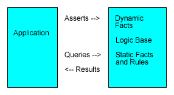

Logic Base
Logic Base
{Previous1} Start Contents {Next1}
Logic Base
Prolog facts and rules can be used to represent logical knowledge that is relatively formal in nature. Many types of business rules, such as pricing, workflow and underwriting rules fall in this catagory, as do many types of government and organization rules and regulations.
The facts and rules of the application area are stored in a logic base. The rules are applied to specific cases. An application sets up a case by asserting dynamic facts to the logic base. The application can then query the logic base and get the results for that particular case.
For example, a logic base might contain the facts and rules for pricing an air line ticket. The application using that logic base would first assert the particulars of the flight, say dates and destination, and then query the logic base to get the fare.
Prolog comes from the same theoretical roots as relational database. Prolog facts are similar to rows of relational tables. Prolog queries are like database queries, and Prolog rules are like saved queries.
The primary difference between a logic base and a database is focus. The main focus of a database is data. The main focus of a logic base is logical relationships, or rules.
A logic base can hold a fair amount of data (logical facts). It's rules can also reason over data in external databases.
This section of the tutorial will show how to: